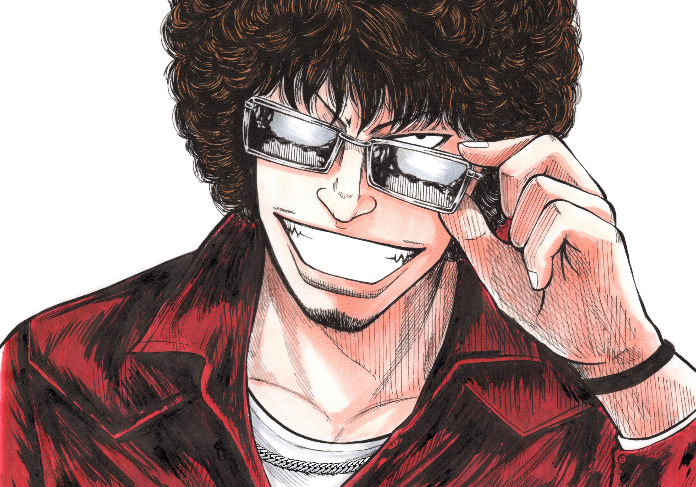
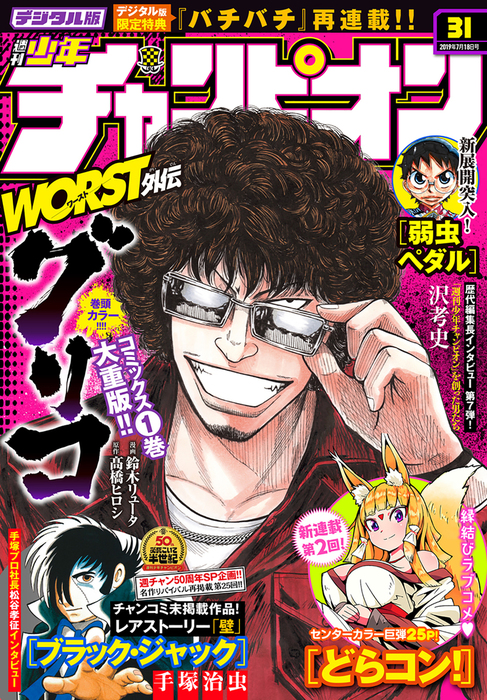
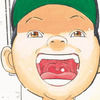
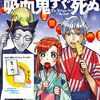
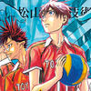

This week's Weekly Shonen Champion posting order & comments from the author.

Yowamushi Pedal

Magimoji Rurumo', my series published in Monthly Shonen Sirius has finished after 12 years. It received a final color page and an interview, so I hope you check it.
BEASTARS
One of my youngest editors finally made it to Akita Shoten. I am steadily getting older.
Atsumare! Fushigi Kenkyuubu

I tried to do planks recently, but even doing them for a minute is tough. I lack physical strength...
Yuuenchi Baki Gaiden

I went to USA in early June. I was able to watch a first week match of the Major League Baseball and a home-run by Shohei Otani, a Los Angeles Angels player. (Yumemakura).
Appare! Urayasu Tekkin Kazoku

Yanagi's master, Kunimatsu, appearances and commentary times are what give me goosebumps and make some chapters the best of the 'Baki' series.
'Ippon' Again

I am really looking forward 'Toy Story 4'.
Rokudo no Onnatachi

Convenience stores are great. Even if the size of the store does not change, the amount of things that you can buy there keep increasing.
Mairimashita! Iruma-kun
I went to the dentist for the first time in a while. I got a radiography while there was Beethoven music playing in the background. Why?!
Ashigei Shoujo Komura-san

Hoshino Gen is going to the TV program 'Burari tochû gesha no tabi'! I just remembered he is Yokoyama Daisuke's older brother.
Worst Gaiden Guriko

Berlin is Sunny' was the best mystery novel I have read in recent years! It was really fun! (Suzuki)
Boryaku no Panzer
I am working while listening to videos of urban legends and unresolved mystery cases. They are interesting.
The Vampire Dies in No Time

After 28 years of life, I have concluded that sugar is good. Shokupan is also nice.
Harigane Service Ace

The movie 'Children of the Sea' is definetely one of my favourite films. It can have different interpretations for different people.
Rororro!
The best way to eat is with resh eel fish oil.
Magical Girl Site

It seems that JK(TN: Joshi Kosei / High School Girl) enjoy Tapioca drinks.
Sachio-kun

I wake up at 8 am every morning and I start doing manuscript writing! Then I eat, write, eat rice, bathe and go to sleep.
Junior
Why was Minoru Suzuki (TN: A Japanese wrestler) removed from the G1?
0
Thank you very much.
Himawari

Thank you to all the people that has been involved in 'Himawari'. I will not waste my time suffering from comments. Well then, see you later.
Furutto on Thursday

I have been finally able to play the Mukkuri. It is really embarrassing to bring up an instrument but not know how to play it.
Dorakon!
Shokubai Hiroomi
Nice to meet you! I am aiming for a love comedy that I hope everyone will enjoy, hope you find my serialization fun!